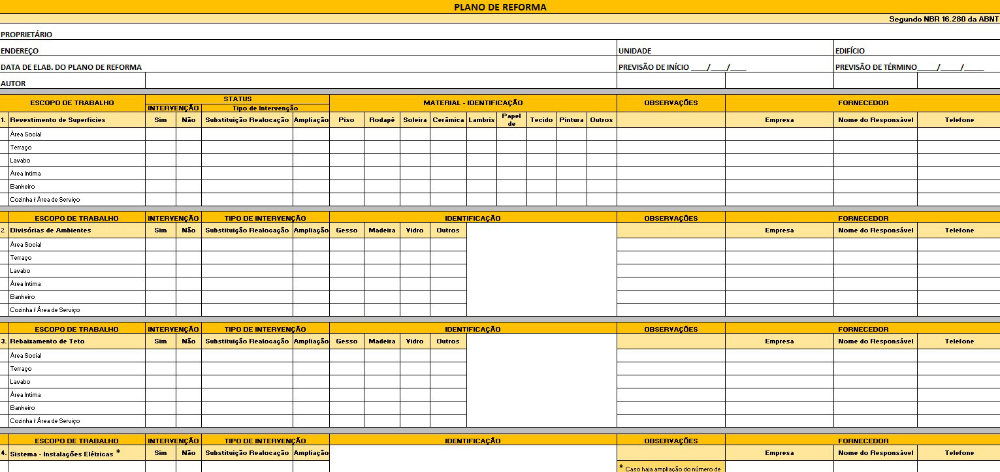

Diversos são os benefícios de uma obra bem planejada. Segundo Mattos (2010), um planejamento adequado permite o conhecimento pleno da obra, a identificação de situações desfavoráveis antes do tempo, agilização de decisões, otimização de recursos, padronização de comunicações e assim por diante. Por outro lado, o autor também aponta que deficiências de planejamento são mais comuns em obras de pequeno e médio porte. Normalmente, são obras mal planejadas, mal controladas ou mesmo totalmente improvisadas, que causam frustração ao cliente, atrasos na entrega, orçamento estourado e até mesmo litígios judiciais.
Obra de design de interiores
Fonte: Pexels (2024)
Fotografia de duas pessoas dentro de uma estrutura de madeira residencial que parece estar em construção. Elas parecem estar conversando sobre informações da obra que estão executando e são mostradas em um tablet. Há vários materiais de construção espalhados ao redor deles, destacando a colaboração entre profissionais.
No gerenciamento de execução de projetos de design de interiores, o planejamento é uma etapa crucial no sucesso de qualquer obra. É necessário organizar e coordenar diversos elementos, como fornecedores, mão de obra, materiais e cronogramas. Para isso, instrumentos, métodos e ferramentas são utilizados ao longo desse processo.
Durante o curso, você teve acesso a diversas ferramentas de planejamento. Realizar um briefing completo, analisar o espaço que será projetado, pesquisar referências, conceituar e idealizar o que será feito, desenvolver os desenhos técnicos e modelos tridimensionais, especificar e orçar materiais e produtos que serão utilizados. Tudo isso é planejamento. Para gerenciar uma obra não seria diferente. Saber planejar adequadamente faz toda a diferença no resultado final do projeto.
Antes de abordar esses itens, porém, é importante entender alguns conceitos fundamentais para avaliar os diferentes momentos e os itens do processo de execução da obra. Para isso, entenda o que são os três ês.
Ao avaliar processos, é possível utilizar diversos critérios. No entanto, os chamados “três ês” são tradicionais (Sano; Montenegro Filho, 2013) e servem como uma base importante para fundamentar a avaliação de uma obra. Utilizados nos diferentes contextos de gestão e administração, eles também serão importantes para otimizar processos e avaliar os resultados desejados em uma obra. Eles podem parecer ter o mesmo significado, mas são bem diferentes. Conheça cada um deles:
Se um trabalho executado foi suficiente para atingir o resultado projetado, então esse é um trabalho com eficácia. Em uma obra, ser eficaz significa fazer tarefas que atinjam o resultado, como cumprir prazos, atender às especificações e satisfazer as expectativas do cliente.
À primeira vista, parece ser algo fácil de atingir, mas não é bem assim! Para isso, é fundamental que o planejamento da obra seja seguido à risca, que haja comunicação clara entre todos os envolvidos (designer, mestre de obras, pedreiro, eletricista, hidráulico, profissionais parceiros, cliente etc.) e que os objetivos do projeto sejam claramente definidos.
A eficiência é um passo a mais: será que o caminho que eu percorri para ter eficácia foi o mais adequado? Aqui, não se avalia apenas se algo foi feito, o caminho percorrido também é importante. Em uma obra, ser eficiente significa realizar tarefas de maneira correta utilizando os recursos sem desperdício, otimizando etapas e processos.
Por exemplo: se eu preciso pintar uma sala e compro uma lata de 18 l de tinta a mais, em tese eu estou tendo eficácia, pois tenho o material correto para a pintura. Porém, eu estou tendo eficiência? Não, pois não otimizei os recursos da obra. Será preciso também eficiência em questões como planejamento logístico e cronograma, para evitar equipes e obra paradas sem os materiais necessários.
A efetividade tratará de uma análise que mede os resultados alcançados (ou seja, se tem eficácia), comparando com a atividade desempenhada para alcançar esse resultado (ou seja, e eficiência). Em uma obra, ser efetivo é finalizá-la corretamente, aplicando os melhores procedimentos possíveis.
Se o cliente está satisfeito e se a obra correu da melhor forma possível, pode-se dizer que houve efetividade no processo de trabalho. Para isso, é necessário aplicar os conceitos de eficácia e eficiência: planejamento seguido à risca, logística e cronogramas adequados, seguir o projeto executivo detalhado, e assim por diante.
Ao abordar os três ês, percebe-se que existem procedimentos e instrumentos que podem auxiliar os profissionais na gestão e no planejamento da obra.
Existem diversos instrumentos que auxiliam o gerenciamento da execução de projetos de design de interiores. Você deverá escolher aquele ou aqueles que mais atendem à demanda do seu escritório de design de interiores ou poderá ter contato com alguns desses métodos ao trabalhar para outros profissionais de design ou arquitetura. Confira algumas metodologias e ferramentas que auxiliam no planejamento e gerenciamento de projetos. Alguns serão abordados de maneira aprofundada em seguida, mas entenda antes como poderá utilizá-los em seus computadores e smartphones.
Neste momento está-se falando do método em si, ou seja, de que forma se pode planejar e gerenciar a obra, e não necessariamente das ferramentas que serão utilizadas para gerenciamento.
É importante salientar que as metodologias apresentadas podem ou não ser aplicadas. Cabe ao designer de interiores verificar se o método faz sentido para a organização do seu negócio.
O método Scrum é um método bastante utilizado nas áreas de TI (tecnologia da informação) e marketing, que, nos últimos anos, tem sido aplicado por grandes escritórios de arquitetura e engenharia. Jeff Sutherland é o cocriador do método de 1993, inicialmente voltado para as áreas de software e desenvolvimento de produtos. Porém, em seu livro Scrum: A Arte de Fazer o Dobro de Trabalho na Metade do Tempo (2016), Sutherland demonstra que a proposta pode ser aplicada nas mais diversas áreas, incluindo a construção civil, o design de interiores e a arquitetura. Teoricamente, a proposta é simples.
O responsável é a pessoa que sabe tudo que está acontecendo no andamento da obra. No caso de gerenciamento de obras, o ideal é que essa pessoa seja você.
Quem são os profissionais envolvidos no projeto? Escolha e conheça o trabalho de cada um dos membros, até para saber o que exigir e quanto exigir.
Assim como aqui no curso você tem acesso a um quadro Kanban, separando os conteúdos para leitura semanal, essa mesma estrutura pode ser criada para organizar a obra dos seus clientes. Um quadro Scrum ou Kanban deve apresentar de maneira bem visual e de fácil acesso para todos os participantes as tarefas que deverão ser realizadas, incluindo ordem e datas de execução. Separe em três colunas: para fazer, fazendo e feito. A equipe monitora e movimenta cada uma das tarefas do quadro na medida em que as for realizando. O responsável pelo projeto monitora o andamento.
Defina e priorize as tarefas mais importantes do projeto. Lembre-se sempre de que uma obra tem a sua ordem de realização, normalmente iniciada pela demolição.
Sutherland (2016) indica criar uma escala de 1 a 10 para a classificação das tarefas, na qual 1 é uma tarefa pequena e 10 é uma tarefa grande. Quanto maior a tarefa, mais tempo ela levará para ser concluída, pois exigirá mais esforço.
Os sprints são os ciclos de entrega e conferência, ou seja, os momentos nos quais o responsável pelo projeto avaliará o andamento das tarefas do quadro Scrum. Esses ciclos podem ter a duração de até um mês, dependendo do tamanho do projeto. No caso de uma reforma residencial, por exemplo, é interessante definir sprints semanais, que poderiam ocorrer nas suas visitas técnicas até o local da obra, conferindo o andamento do quadro Scrum e resgatando as responsabilidades da equipe no andamento das tarefas.
Essa reunião deve acontecer antes de cada sprint (ciclo). A equipe define quais são as tarefas que devem acontecer dentro daquele ciclo. Como já está definido o tamanho de cada tarefa de 1 até 10, na medida em que vão sendo realizadas as tarefas, pode-se ir pontuando. Por exemplo: ao fechar um sprint, você verificou que sua equipe de obras realizou 4 tarefas difíceis, totalizando 40 pontos, e o previsto para aquele sprint eram 30 pontos. Portanto, é possível ampliar em 10 pontos o próximo sprint, talvez agilizando o cronograma. Importante: toda a equipe precisa estar de acordo com as metas estabelecidas.
Sutherland (2016) comenta que as reuniões diárias oxigenam e permitem avaliar o andamento das tarefas antes do fechamento de um ciclo (sprint). Portanto, realizar conversas e feedbacks diários, como bate-papos curtos e diretos, para acompanhar o andamento das tarefas é algo bem importante. Você pode se guiar pelas seguintes perguntas:
Ao final de cada ciclo (sprint), normalmente na sexta-feira, é preciso realizar uma revisão das tarefas concluídas e o que ficou ajustado para a semana seguinte (novo sprint). Somente itens marcados como “feito” devem ser revisados.
Interessante o método Scrum, não é mesmo? Algumas empresas oferecem consultorias e plataformas que auxiliam neste gerenciamento. Mas ferramentas gratuitas, como o Trello ou o Miro, permitem aplicação digital do método. E, se você e sua equipe de obras são mais visuais, um quadro físico na obra também ajuda na organização. Não deixe de testar!
Além do método Scrum, outro método conhecido e utilizado na construção civil é o Project Management Body of Knowledge, ou simplesmente PMBOK. Esse método é de autoria do Project Management Institute (PMI), uma associação voltada para o gerenciamento de projetos. O guia criado por eles apresenta técnicas e práticas que auxiliam na melhoria contínua de gerenciamento de obras. Porém, é um método mais voltado para a construção civil, em obras mais pesadas. De qualquer forma, vale você pesquisar e conhecer, para entender melhor os métodos apresentados.
É possível dizer que a metodologia é como se planeja e gerencia uma obra. As ferramentas são como se aplica o que foi planejado. Falou-se anteriormente sobre o Trello e o Miro, que são ferramentas para a aplicação da metodologia Scrum. Quais outras ferramentas o mercado pode oferecer para planejar e gerenciar um projeto de design de interiores? Confira algumas:
É a forma que se tem de aferir os valores de cada um dos itens de um projeto. Aqui, é necessário tentar ser o mais detalhista possível, para que não haja gastos fora do que está sendo previsto. Quando você indica um piso cerâmico, por exemplo, não pode esquecer que precisará comprar argamassa e rejunte também. A forma mais simples de organizar um orçamento é em tabelas, e programas de planilha como o Excel são ótimos para isso.
Planilha de orçamento para reforma
Fonte: Max Planilhas (s. d.)
Captura de tela que mostra uma planilha no software Excel chamada “Orçamento reforma residencial”. É composta de diversas células preenchidas com itens como valor previsto, valor gasto, saldo, gasto material e gasto mão de obra. Abaixo, quatro colunas indicadas como data, descrição, categoria e valor. Abaixo estão células preenchidas com essas informações
O nome “memorial descritivo” vocês já viram algumas vezes ao longo do curso. No contexto do gerenciamento de obra, o memorial descritivo especificará materiais, técnicas e acabamentos que serão utilizados na execução do projeto. Portanto, ele é um documento escrito que indica o que o projeto executivo não consegue comunicar. Você pode utilizar programas tipo planilha, como Excel, ou até mesmo programas de texto, como o Word.
Memorial descritivo
Fonte: Marilac (s. d.)
Captura de tela que mostra uma tabela com listagem de itens que serão realizados em uma obra. Está dividida em quadros menores, com títulos como demolição e remoção, elétrica, alvenaria, instalações, gesso, revestimento e pintura. Em cada quadro há linhas especificando aposentos e colunas especificando local, trabalho e quantitativo.
É a principal ferramenta para auxiliar no planejamento da obra. Com o cronograma de obra (e o diagrama de Gantt), é possível determinar as atividades, os prazos e as sequências de execução e ter uma visão clara de todo o processo. Basta pintar as células e colunas, definindo as datas para que cada tarefa seja cumprida. Aqui, programas como o MS Project ou Excel podem ajudar.
Cronograma e diagrama de Gantt
Fonte: Blog Planilha de Obra (2020)
Captura de tela de uma planilha no software Excel contendo, no topo, datas e dias por semana, e, na esquerda, os diferentes serviços. No encontro da data com o serviço, é pintado de verde quando ocorre, ficando em branco quando não ocorre. É possível verificar que, ao longo dos dias, as barras vão indo para a direita, demonstrando a passagem dos serviços e a interligação entre eles.
Esses são os principais instrumentos que auxiliarão você no planejamento de obra e que serão estudados com mais detalhes posteriormente. Existem outros, como diário de obras (para registrar os acontecimentos a cada dia), checklists e softwares/serviços que oferecem soluções completas, mas o importante é entender quais são os principais e que farão com que sua obra seja eficiente, efetiva e eficaz.
Uma obra não é uma via de mão única. Como dificilmente você será capaz de projetar e executar uma obra sozinho, sempre precisará tratar com outras pessoas. Confira dois grupos que se destacam: os fornecedores e a mão de obra.
São as pessoas e empresas que fornecem material, equipamentos e serviços para a execução da obra, ou seja, são as lojas de revestimento e de material de construção, os marceneiros, as empresas de fornecimento de acabamentos de banheiro e assim por diante.
Vendedora e comprador em loja de fornecedor de piso
Fonte: Freepik (2024)
Fotografia de duas pessoas em uma loja com uma variedade de amostras de materiais ao fundo, possivelmente para reforma ou design de interiores. A pessoa à esquerda está segurando uma prancheta, sendo uma vendedora. A pessoa à direita examina uma amostra de piso retangular, sendo o cliente. Ambos estão conversando sobre o produto observado.
Manter um relacionamento saudável com esses grupos é importantíssimo, pois eles terão uma função muito importante no andamento da obra com o fornecimento dos insumos. É interessante estar em contato direto e frequente com eles para que, caso aconteça algum problema, possam ajudá-lo. Aqui, monitorar entregas e avaliar a qualidade dos materiais é muito importante.
Nesse sentido, a logística é fundamental para a obra. Saber as datas e os horários de recebimento e como você levará os materiais até o local da obra é muito importante. Imagine que, por algum motivo, o piso que você encomendou para chegar em 5 dias chegará em 15. Se você tem um bom contato com o fornecedor, poderá avaliar se esse prazo está correto, se há formas de substituir o piso, se haverá algum desconto pelo atraso, e assim tomar a melhor decisão para o momento.
Ao montar a sua carta de fornecedores, você deve ter como critério a qualidade no atendimento, os custos, a confiabilidade e o atendimento de prazos. Muitas vezes, você terá um fornecedor que é um pouco mais caro, mas que você sabe que sempre atende aos seus prazos. Com isso, você terá margem para negociar com o cliente esse valor maior, certo?
Já a mão de obra se refere a quem realmente irá colocar a “mão na massa”. São as pessoas e empresas que instalarão o seu piso, pintarão a parede, instalarão luminárias e assim por diante. É o pedreiro, o pintor, o eletricista, o hidráulico, o mestre de obra, entre outros.
Pessoa construindo uma casa
Fonte: Freepik (2024)
Fotografia de um trabalhador da construção civil aplicando argamassa em uma parede de tijolos na construção de uma casa que ainda está sem cobertura. O trabalhador está vestindo uma camisa xadrez, um cinto de ferramentas, luvas e um capacete de segurança laranja.
Com a mão de obra, a coordenação e o cronograma de obra são fundamentais. Você deve entender os prazos e a duração de cada uma das etapas que serão realizadas na obra. Mattos (2010) fornece algumas regras práticas para determinar a duração de uma atividade:
| Regra | Significado |
|---|---|
| Avaliar as durações uma a uma | Deve-se estimar a duração de cada atividade separadamente das demais, assumindo que mão de obra tem oferta suficiente. |
| Adotar o dia normal | Cada atividade deve ser calculada tendo como base a jornada regular do dia, sem contabilizar horas extras e turnos maiores, pois isso pode acabar refletindo em um cronograma tendencioso. |
| Não pensar no prazo total da obra | Deve-se montar o cronograma de forma isenta, sem pensar em um tempo total de obra. Com isso, é possível passar um prazo realista. |
| Dias úteis não são dias corridos | Por exemplo: quinze dias no calendário é diferente de quinze dias de obra (aqui se conta normalmente de segunda a sexta, o que totalizaria três semanas de obra). |
Regras práticas para determinação de duração de uma atividade
Fonte: Adaptada de Mattos (2010)
Assim como no caso dos fornecedores, a seleção de mão de obra deve focar em qualidade de serviço, custos, atendimento de prazos e confiabilidade. Além disso, o designer que está acompanhando uma obra deve assegurar que ela está progredindo de maneira adequada, de acordo com o projeto e com as etapas do cronograma.
Por esse motivo, manter um relacionamento saudável com fornecedores e mão de obra é fundamental para um bom andamento da sua obra. Acompanhando de perto os fornecedores e a mão de obra, será possível resolver os problemas rapidamente.
Além das pessoas, uma obra também depende dos materiais que serão utilizados para ter um andamento adequado. Materiais são tudo aquilo que será comprado e utilizado, como piso, argamassa, rejunte, tintas, eletrodutos, fios, luminárias e assim por diante. É preciso ter sempre fornecedores confiáveis, que ofereçam bons materiais para a obra, assim como mão de obra confiável, que saiba como utilizar esses materiais.
Os materiais representam uma parte significativa do orçamento de uma obra. Assim, é importante ter quantitativos e orçamentos detalhados de cada um dos itens que está no projeto executivo. Quantitativo é a quantidade exata de materiais necessários que serão utilizados em cada etapa do projeto, o que é fundamental para a elaboração de um orçamento preciso. Um quantitativo adequado evita desperdícios e faltas de materiais, garantindo que o cronograma seja seguido evitando interrupções. Softwares de projeto e planilhas específicas ajudam a tornar esse processo mais preciso.
Com os quantitativos, é muito mais fácil ter orçamentos corretos e precisos. Com eles, você consegue ter os custos diretos e indiretos. Por exemplo, se você for indicar um piso cerâmico, com o quantitativo preciso, você já consegue ter também os valores corretos de argamassa, rejunte, espaçadores, transporte e assim por diante. Além disso, o quantitativo correto permitirá que você possa negociar os orçamentos de maneira mais efetiva, agilizando prazos e valores para seu cliente.
Antes de iniciar um cronograma, é importante estabelecer uma ordem lógica das atividades que serão feitas. Por exemplo, você não fará a pintura antes de passar os eletrodutos nas paredes. Mattos (2010) traz uma dica importante de como pensar a ordem das atividades: pergunte “de quem esta atividade depende?”; com isso, é possível determinar um ponto final e determinar os antecessores.
O cronograma é o instrumento de planejamento no dia a dia da obra, e é por ele que o responsável técnico e a equipe devem seguir diversas providências, como programar atividades, instruir equipes, fazer compras, alugar equipamentos, verificar e monitorar progresso das atividades, replanejar a obra, entre outros (Mattos, 2010). O cronograma físico-financeiro abordará o planejamento e também incluirá valores gastos no período em questão. A junção dos dois faz com que seja possível fazer uma previsão semanal ou mensal de gastos, além das conclusões e dos pagamentos por etapa realizada.
Um instrumento que ajuda muito neste momento é o cronograma de Gantt. Esse recurso criado pelo engenheiro Henry Gantt insere um gráfico de barras associando atividades em uma coluna na esquerda e datas em uma linha na parte superior. O comprimento da barra corresponde à duração da atividade, de forma que se consegue visualizar os dias de início e fim. Veja um exemplo simples.
| Atividade | 1/8 | 2/8 | 3/8 | 4/8 | 5/8 | Sáb. | Dom. | 8/8 | 9/8 | 10/8 | 11/8 | 12/8 | Sáb. | Dom. | 15/8 |
|---|---|---|---|---|---|---|---|---|---|---|---|---|---|---|---|
| Instalar piso | |||||||||||||||
| Pintar paredes | |||||||||||||||
| Instalar luminárias |
Cronograma de barras
Fonte: Senac EAD (2024)
Esse é um exemplo bem simplificado. Note que, quanto mais detalhado, mais se consegue organizar a obra. Nesse exemplo, poderiam ser inseridas mais linhas falando sobre rejunte, compra de materiais, divisão por cômodos e assim por diante.
No cronograma físico-financeiro, também é preciso cuidar dos valores de pagamento para fornecedores e mão de obra. Ao acertar pagamentos semanais com o empreiteiro, por exemplo, eles devem estar indicados para serem pagos a cada semana. Você contratou outros profissionais? Deve indicar em qual semana cada um deles deverá receber o pagamento. O mesmo vale para materiais: as compras serão feitas ao longo da obra? Então devem estar previstas no cronograma.
| Atividade | Semana 1 | Semana 2 | Semana 3 |
|---|---|---|---|
| Instalador piso | R$ _____ | ||
| Pintor | R$ _____ | ||
| Eletricista | R$ _____ |
Cronograma financeiro
Fonte: Senac EAD (2024)
Que tal fazer um teste? Clique abaixo para fazer o download do arquivo em Excel de uma situação hipotética de reforma de cozinha e insira mais linhas na planilha. Pense em tudo que seria feito em uma obra deste tipo. Coloque itens como “fazer rejunte”, “compra de tintas”, “fazer abertura no gesso”, “instalação de luminárias”, “marcenaria” e pense em quantos dias você estimaria para cada um desses itens. Tente também fazer a inserção de linhas e de valores fictícios. Poste no fórum ou envie para seu tutor conferir.
Nas unidades curriculares que abordam projetos residenciais, de ambientes corporativos, de espaços efêmeros e de pontos de venda, você já estudou como se produz um memorial descritivo. Nesses materiais estavam informações como cálculo de áreas, montagem do material, indicação do que deveria aparecer e especificidades dependendo do tipo de projeto.
Dica: acesse as seguintes unidades curriculares para rever esses conhecimentos:
O memorial descritivo é, portanto, mais um documento de importância fundamental no planejamento da obra. É a partir dele que você conseguirá estabelecer orçamentos e cronogramas para o andamento da execução. Com ele, você também tem uma documentação que evita mal-entendidos e combinações verbais. Garantir que essa documentação esteja de posse dos envolvidos facilita a comunicação e garante eficiência no processo. Além disso, com o memorial, você conseguirá ter um controle mais adequado dos custos do projeto.
O controle dos custos começará no orçamento inicial. A partir de um levantamento detalhado, você conseguirá contatar fornecedores e mão de obra para passarem os valores de cada serviço e material que será utilizado. Com isso, você terá uma estimativa bastante detalhada do que será gasto.
É importante que, mesmo com orçamento inicial, os gastos sejam monitorados. Não é incomum acontecerem gastos a mais na obra, podendo ser por erros de execução ou de projeto, mas também por questões diversas, como alterações dos itens do memorial descritivo ou até mesmo do projeto inicial. Aqui, um acompanhamento com ferramentas como o Excel poderá ajudá-lo a ter esses valores sempre atualizados.
A ABD, Associação Brasileira de Design de Interiores, disponibiliza para os seus associados uma ferramenta que auxilia no planejamento e no gerenciamento de obras. Trata-se de um documento de plano de reforma, criado em um editor de planilha, contendo as principais informações da reforma e o escopo de trabalho em cada ambiente, que vão de aplicação e revestimentos até a instalação de marcenaria. A planilha deve ser alimentada com todas as informações, desde tipo de intervenção que será realizada, quem será o prestador de serviço a qual será o material utilizado. Para ter acesso ao modelo, é preciso ser associado. A ABD aceita profissionais experientes, recém-formados e estudantes por meio do pagamento de anuidade.

Tabela de plano de reforma ABD
Fonte: ABD (c2021)
Captura de tela mostrando uma planilha organizada com um plano de reforma, em que constam o nome do proprietário da obra, o endereço, a data de elaboração do plano de reforma, o autor, a previsão de início e de término da reforma, além de detalhar o escopo do trabalho realizado em cada ambiente, desde o revestimento de superfícies até a instalação de marcenaria.
Este conteúdo demonstrou como o planejamento de obra pode fazer com que a execução dela seja mais eficaz, eficiente e efetiva ao utilizar ferramentas de gestão e gerenciamento. Segundo Mattos (2010), deficiências no planejamento e controle são algumas das maiores causas de produtividade baixa e perdas elevadas, tendo com isso produtos imobiliários de baixa qualidade.
Assim, o planejamento de obras é um processo que envolve a gestão de fornecedores, mão de obra, materiais, cronogramas, custos e a elaboração de um memorial descritivo detalhado. Saber escolher fornecedores e gerir a mão de obra qualificada é essencial para a qualidade e pontualidade das entregas. Dessa forma, um planejamento bem-sucedido garante a execução do projeto dentro do prazo, do orçamento e com boa qualidade, que é o que seu cliente espera de você!